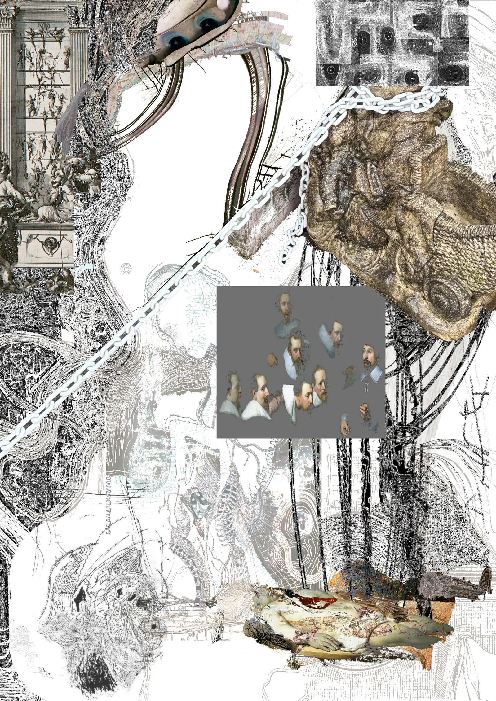

synomareっていいます。テクストを書いて、デザインをして、グラフィックをつくります。よろしくね

A B C D Esynomare
Text · Design · Graphic
Theatrum anatomicum
©
Lectio — 自己紹介trace to dilate
synomare テクスト。デザイン。グラフィック。
synomare テクストを書いて、デザインして、グラフィックを作ります。
synomareっていいます。テクストを書くことがあります。デザインもやったことがあります。グラフィックを作ることもあります。ここに過去の制作物をまとめています。よろしくね。
synomareっていう名前なんです。どんな人か知りたいならXのアカウントを見てね。テクストを書いていることもあるみたいです。デザインもやってみたことがあります。グラフィックを作ることもあります。そういえば過去の制作物をここにまとめてたので、よかったら見てみてくださいね。みんなよろしくね。
synomareっていう名前を使っているはずです。Xのアカウントに書いてたのでそうなんだと思います。テクストを書いてたんだっけな。デザイン、うん、やっていたことがあったと思います。グラフィックを、そうなんですね。過去の制作物がここにまとめられてるんだ。日記はここに。なるほど。自分のことなのにすいません。みなさん、よろしくね。ばいばい。
名前、えっと、なんだっけ。忘れちゃった。あ、でも、えっと、たしかテクストって書いてたらしいんです。うん。あとデザインもやったことがあったのかな。えーっと、うん、それと、うん。いや、えーグラフィックを作ることがあったって聞いたことがありました。うん。そっか、そうですよね。うん。なんだったっけ、あ、そうだ! たしかsynomareっていう名前でした。そうでしたよね？いやきっとそうだったはずです。あなたが覚えていてくれたんですよね。ありがとう。じゃあ、またね!